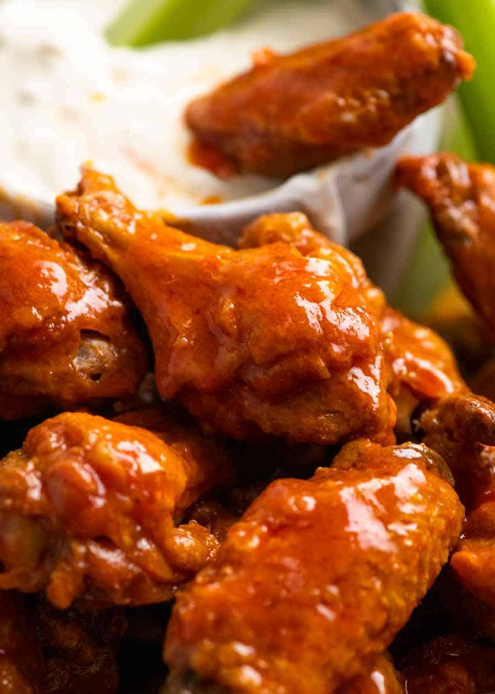

Buffalo wings

Description
So here is what I promise you: If you love perfectly seasoned crispy buffalo wings, tossed in a classic spicy, buttery Buffalo Sauce with a tinge of sweetness, and you prefer to avoid the mess and calories of deep frying, this is The One.
Ingredients
-
Crispy baked wings
- 4 lb / 2kg chicken wings, wingettes & drumettes
- 5 teaspoons baking powder
- 3/4 teaspoons salt
-
Sauce
- 4 tbsp (60g) unsalted butter, melted
- 1/2 cup Frank’s Original Red Hot Sauce
- 1 tbsp brown sugar
- 1/4 tsp salt
-
Blue cheese dip
- 1/2 cup crumbled blue cheese, softened
- 1/2 cup sour cream
- 1/4 cup mayonnaise
- 1 clove small garlic, minced
- 1 - 3 tbsp milk
- 2 tbsp lemon juice
- 1/2 tsp salt
- Black pepper
Steps
Crispy baked wings
- If you plan ahead, lay the wings on a rack on a rimmed baking tray and let them dry uncovered in the fridge overnight. Alternatively, pat them dry with paper towels.
- Preheat the oven to 250°F/120°C (all oven types). Put one oven shelf in the lower quarter of the oven and one in the top quarter.
- Line the tray with foil. Spray the rack on the baking tray with oil.
- Place the wings in a large bowl. Sprinkle over baking powder and salt. Use hands to toss well (or shake in ziplock bag) to coat wings evenly.
- Place the wings skin side up on the rack (ok if snug, they shrink). Bake on the lower shelf in the oven for 30 minutes.
- Then move the tray up to the higher shelf and turn the oven up to 425°F / 220°C. Bake for a further 40 to 50 minutes, rotating the tray halfway through. The wings do not need to be turned over.
- The wings are ready when they are dark golden brown and the skin is very crispy.
- Toss with Hot Sauce and serve immediately with Blue Cheese Dip and celery sticks. They can be served plain, with a dipping sauce or tossed in sauce. Wings also reheat crispy!
Sauce
- Whisk together the Sauce ingredients. Keep warm or reheat just prior to using.
Blue cheese dip
- Mash the blue cheese with sour cream until smooth (or to your taste).
- Add remaining ingredients and mix well until combined, using milk to get it to the consistency you want.
- Store in the fridge until required. Remove from the fridge 15 minutes before serving.
Main page